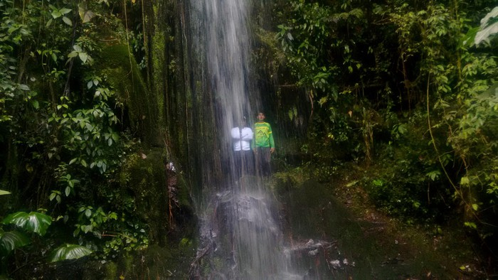

Cascada La Granja
La Cascada La Granja es una impresionante caída de agua ubicada en las montañas de Urrao. Ofrece un ambiente natural único para disfrutar y relajarse.
Mirador Cerro Tusa
El Mirador Cerro Tusa ofrece una vista panorámica espectacular del paisaje montañoso de la región. Es un lugar perfecto para observar el atardecer.